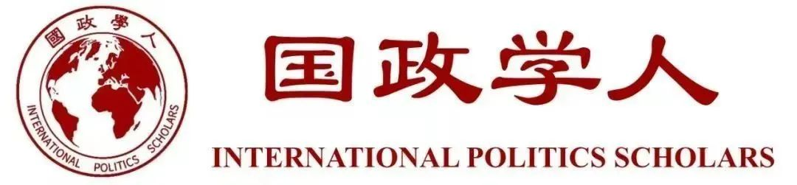
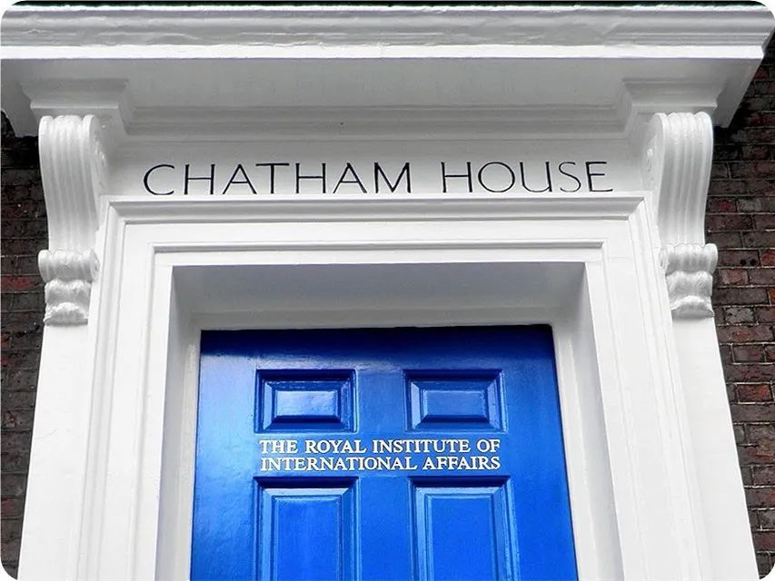

收录于合集

**导言：
**
展望未来十年，美国外交政策的关键问题是什么？查塔姆研究所（又名英国皇家国际事务研究所）的美国与美洲项目研究人员和14位来自美国及欧洲的外交政策专家们(例如著名国际关系学者罗伯特·杰维斯,
杰克·斯奈德等)在本调查中分享了他们对21世纪20年代美国外交政策的看法，涉及到人权、贸易、网络安全、气候变化、移民问题、言论自由、伊朗问题、北约问题等14个关键的议题领域，国政学人特此编译以飨读者。
本期编委
【编校】 李玉婷、陈勇、王泽尘、扎西旺姆、王川、吴皓玥、周玫琳、施榕
【排版】 杨洋
【来源】 Robert Jevis, et al., US 2020 Visionary Survey , London: Chatham House, December 19, 2019. https://americas.chathamhouse.org/article/2020-visionary-survey/
简介
查塔姆研究所（Chatham House），正式名称为皇家国际事务研究所（The Royal Institute of International Affairs），总部位于英国伦敦。1920年，基于英国外交官莱昂内尔·柯蒂斯（Lionel Curtis）在巴黎和会期间提出的倡议，查塔姆研究所正式成立。作为独立的智库组织，查塔姆研究所的使命是帮助政府和社会构建一个可持续的、安全的、繁荣的和公正的世界。一百年来，查塔姆研究所始终致力于通过辩论、对话和独立分析促进国家间的相互理解，被同行认为是世界国际事务领域的领导机构，亦为知名查塔姆研究所原则的发源地（与会者可自由使用在会议中获得的信息，但不得透露演讲者及其他与会者的身份与所属机构）。美国《外交政策》杂志将查塔姆研究所称为美国境外排名第一的智库（2009）。根据2018年美国宾夕法尼亚大学的全球关键智库指标评比报告，查塔姆研究所的世界（worldwide）排名（7/177），美国境外智库排名（non- us）（3/131）。

本期目录
-
莱斯利·维涅穆里 ：美国天赋权利委员会的运作前景
-
克瑞翁·巴特勒 ：多边经济体系的发展将成为重点
-
梅根·格林 ：中国带来的潜在挑战
-
罗伯特·杰维斯 : 网络冲突的风险
-
艾米·波普 ：“任重而道远”的移民问题
-
杰克·斯奈德 ：专业的舆论管理机制将保护美国的言论自由
-
达莉娅·达萨·凯 ：美国对伊战略需要基于伊朗与中东地区的现实
-
彼得·韦斯特马科特 ：美伊双方需要创造性的外交
-
林赛·纽曼 ：气候危机和经济不平等与多边主义
-
罗伯特·豪斯 ：美国对华政策的多重维度
-
阿曼达·斯洛特 ：政治极化与美国外交
-
安娜·威斯兰德 ：美国将不再领导欧洲防务
-
米卡·赞科 ：未来的美国总统对外交政策意义重大
-
玛丽安·施耐 德-帕兹辛格：展望美国的贸易政策
01
美国天赋权利委员会的运作前景
【作者】 莱斯利·维涅穆里（Leslie Vinjamuri），查塔姆研究所美国与美洲项目主任，英国女王伊丽莎白二世国际事务领导学院院长，伦敦大学亚非学院国际关系副教授。
2019年，时任美国国务卿蓬佩奥宣布成立天赋权利委员会（Commission on Unalienable Rights）并声称“现在是对人权在美国对外政策中的作用进行有根据的审议（informed review）的时候了。”该委员会由哈佛大学法学院教授、著名人权学者玛丽·安·格兰登（Mary Ann Glendon）领导，并将于2020年发布研究报告。该委员会雄心勃勃，至少有两个困境激发了它工作的积极性。首先，各种人权之间往往陷入紧张状态，引发了哪种权利应该获得尊重的问题。其次，民族国家和国际机构仍然对它们各自对人权所肩负的职责感到困惑。第一个困境在理论上比在实践中更容易解决。这也是天赋权利委员会工作中最具争议的部分。人权是政治斗争的产物，也是对引发广泛共鸣的框架的谨慎采用。为了确保它的相关性和实用性，同时限制它受到强烈抵制的可能，委员会应避免采取与当前政治和社会规范不符的方式来缩小人权的范围。第二个挑战也同样重要。美国对国际机构的态度一直是矛盾的，但是委员会应该认识到，任何试图限制国际机构的合法性权威的努力将为所有国家（不只美国）设置先例。美国脱离国际人权机构可能会削弱其影响全球人权实践的能力。该委员会的一个基本目标应该是对发展中国家领导人的批评进行回应，这些批评认为美国对人权的支持是极具选择性的。当人权与其他外交政策的目标不相容时，一个有原则但也务实的人权议程应该为如何做出权衡提供相关的规则；它还应该解决一个困难且具有争议性的问题，即如何对各种人权进行排序；最后，它还要详细阐述使重视人权的外交政策得以成功的条件。
【编译】 施榕
【校对】 周玫琳
02
多边经济体系的发展将成为重点
【作者】 克瑞翁·巴特勒（Creon Butler），查塔姆研究所全球经济与金融项目主任;国家安全秘书处国际经济事务主任及七国集团/二十国集团副协调人 (2017-19)。
可以说全球经济面临着二战以来最严峻的挑战——尤其是应对全球变暖所需的转型,为数字经济提供一个有效的数据、税收及人权框架的需要，以及在保留全球经济一体化的同时设法解决国际贸易和投资中的国家安全威胁问题。 如果多边经济体系从根本上遭到削弱，或者其基本原则发生改变，有效解决这些问题的难度将大得多。该体系的未来发展由此成为了美国未来10年面临的最重要的外交政策问题之一。 特朗普总统在2018年达沃斯论坛上表示，“美国优先并不意味着美国孤军奋战” （ America First does not mean America alone）。但现在很清楚的是，他的意思是通过一系列双边交易协议和赞同“美国优先”的国家联盟来实现美国的经济目标。 这似乎最多只让多边体系处于次要地位。与此同时，来自中国和其他新兴经济体的压力仍在发酵，它们要求其影响力与其日益增长的雄心和经济实力相匹配。但与本世纪初相比，现在不太确定的是这种影响力一旦实现，是否会符合该体系的自由市场和非政治性的创立原则。美国总统将于明年6月在戴维营主办七国集团(G7)峰会。届时，美国将有一个重大机遇能够影响多边经济体系的未来，使之变得更好。但对成功至关重要的是，美国是否愿意选择一些被美国及其最亲密盟友都视为首要的全球优先事项作为议题，并利用现有国际组织和框架的能力采取长期的、基于证据的方法。
【编译】 扎西旺姆
【校对】 吴皓玥
03
中国带来的潜在挑战
【作者】 梅根·格林（Megan Greene），德•安妮•朱丽叶斯学院国际经济学高级研究员，哈佛大学肯尼迪学院摩萨德- 拉赫马尼商业与政府中心(M-RCBG)高级研究员。
如果你要从潜在影响和可能性两方面来担心一个未来十年美国面临的外交政策问题，它必定会以中国为中心。 中美之间的贸易战将继续上演，但我更担心中国导致此现象的行为:政府对高科技产业的补贴，侵犯知识产权的行为，以及在其机器学习、人工智能和量子计算领域全球领袖的目标下迫使的技术转移行为。无论谁获得这一地位，都将在安全和防卫方面拥有优势。所有这一切都将在中国不断努力在世界范围内建立影响范围的背景下上演——部分通过“一带一路”倡议——以及中国在南海问题的军事化行为。中国的部分雄心将继续受到其经济实力的影响。 在未来的十年里，我们可以预期中国的经济将会放缓，其债务负担将会继续上升到一个惊人的水平——这是一个挑战，因为中国将继续尝试将其计划经济融入到一个(某种程度上)以自由市场为特征的全球经济中。
【编译】 扎西旺姆
【校对】 吴皓玥
04
**网络冲突的风险
**
【作者】 罗伯特·杰维斯（Robert Jervis）, 哥伦比亚大学政治学系阿德莱·史蒂文森讲座教授、美国科学进步协会会员、美国艺术与科学院院士，2000—2001年任美国政治学会主席。他的研究领域涉及政治心理学、国际关系理论、决策分析、核战略和美国外交政策等，是国际政治心理学的集大成者。他的专著《国际政治中的知觉与错误知觉》《系统效应：政治与社会生活中的复杂性》是政治心理学和社会科学的经典名著。
在网络冲突方面，专家知识和领袖意见之间的鸿沟远非其他领域可比。 网络武器的性质和使用尤为复杂，能发挥怎样的作用取决于攻守双方在技术、软件和组织上的瞬息万变的发展。 除此之外，网络武器正在全球范围内被不断应用，私人部门既是重要的参与者，也是主要目标。 雪上加霜的是，区分进攻性和防御性的行为变得极其困难，原因在于用来刺探情报和核实对手行为的工具和入侵行动同样也可被用于干扰和破坏对手的系统。 这些都为误解和制造麻烦创造了空间。在严重的网络冲突中，双方的沟通和信息（交流）系统都会遭到损害，甚至会被用于欺骗，导致误解和冲突加剧。政治领导人一般过于忙碌且缺乏技术训练。 （因此）总体来看，对网络空间动态的了解程度与官员在国家安全部门层级中的位置成反比。 （所以）在网络危机中，有的领导人很可能是在盲目行动（flying blind）。或许，（控制冲突）的最大希望就是那些令人恐惧的（网络冲突）经历能够催生国际管制（举措）。
【编译】 陈勇
【校对】 施榕
05
“任重而道远”的移民问题
【作者】 艾米·波普（Amy Pope），曾任美国国家安全委员会国土安全副顾问，查塔姆研究所美国与美洲项目副研究员（2015-2017）。
当我们展望21世纪20年代时，包括美国在内的世界各国所面临的棘手的、尚未解决的政治挑战，要少于解决由冲突、自然灾害、极端贫困和其他因素造成的强制移民的影响。 这一外交政策问题是少数直接影响国内政治的问题之一，而且很少产生有益的或富有成效的影响。随着移民在美国政治领域不断被消极地看待，公众开始更多地支持孤立主义和民族主义，一个多样化和多元化的社会所带来好处正消磨殆尽。 所有迹象都表明情况不会很快好转。 不论是现在还是将来，气候变化对移民的影响表明，前景将变得更加黯淡，包括西半球在内的地区将变得不稳定。以2013年爆发的一场咖啡叶锈病为例，异常温暖和潮湿的环境破坏了整个中美洲的咖啡作物，造成了50万个工作岗位和过去几年近10亿美元收入的损失，结合地方性的暴力、政治腐败和缺乏治理来看，中美洲移民到美国西南边境的人数，在去年夏天达到近20年来的最高值就不足为奇了。 去年，特朗普政府领导下的美国是唯一一个没有同意联合国《安全、有序和正常移民全球契约》(Global Compact for Safe，Orderly, and Regular Migration)的国家。 美国削减或转移了旨在扭转西半球移民趋势的援助，并且将难民安置上限削减至1980年以来的最低水平，却没有提供任何有建设性的方案来解决这一问题。除非美国对移民问题采取全面的解决方案，否则将再次被其后果压垮。
【编译】 王泽尘
【校对】 王川
06
专业的舆论管理机制将保护美国的言论自由
【作者】 杰克·斯奈德（Jack Snyder），哥伦比亚大学政治学系罗伯特·贝尔福讲座教授，美国艺术与科学院院士。他是目前美国最有影响力的国际关系研究学者之一，并长期为《外交事务》《纽约时报》《经济学人》等媒体撰稿，曾担任《美国政治学评论》和《国际安全》杂志编委。
托马斯·杰斐逊 (Thomas Jefferson) 说，他更喜欢“没有政府的报纸”，而不是“没有报纸的政府”，因为言论自由足以让民主重生。然而，在令人失望的几年后，美国报纸的危险状态让他评价道，“当真相被放进那辆被污染的汽车里，就会变得可疑。”今天面对类似的问题，我们是应该加大言论自由的力度作为补救措施，还是应该审查“假新闻”和“仇恨言论”? 都不是。 最好的解决办法是把我们的主要新闻平台和广播交给高素质的专业记者，让他们自己判断什么是有新闻价值的。 长期以来，针对诽谤、煽动和欺诈的法律一直是对付严重滥用言论自由的有效工具。至于煽动性不那么强的错误信息，哈佛大学媒体研究学者尤查·本科勒（Yochai Benkler）在网络宣传的记录表明， 即使在现今的自由社交媒体中，只要公共信息的主要机构的支柱掌握在真正的记者手中，毫无根据的极端主义谣言就能被遏制。 在美国，恢复1988年以前的联邦通信委员会(Federal Communications Commission)的广播“公平原则”，将是迈向更理智话语的一步。 与此同时，Facebook和其他科技平台已经自愿增加了专业记者来帮助管理其新闻推送。让我们继续施加压力，巩固这一趋势。
【编译】 王泽尘
【校对】 王川
07
美国对伊战略需要基于伊朗与中东地区的现实
【作者】 达莉娅·达萨·凯（Dalia Dassa Kaye），兰德公司中东公共政策中心主任及资深政治学家。
1979年伊斯兰革命以来，每一任美国政府都陷入与伊朗相关的国家安全危机中。特朗普政府一直奉行特别对抗性的政策，从伊朗核协议中退出，并实行极限施压政策。这一政策正在挤压盟友和对手，而且没有明显的尽头。 如果这一过去数十年来最具对抗性的手段加剧了紧张局势和动荡，并增强了伊斯兰共和国在和美国对抗中的政治实力，那么接下来十年的关键问题是美国的政策制定者是否愿意采取新的政策。美国是否会建立与伊朗不一样的关系？它的能力对这一地区有变革性的影响，这将继续对美国及其盟友造成困扰。 重新构想美伊关系的第一步是美国制定可行的伊朗战略。这一战略需要重新考虑长期的遏制战略，将伊朗视为一个关键的（有所限制）的地区大国，而不仅仅考虑其核问题。 一个可持续的对伊战略也需要基于伊朗和该地区不断变化的现实，而不仅仅是华盛顿的政策愿望清单。四十年的政策失败时间过长，继续错误地对待伊朗只会让风险越来越大。
【编译】 李玉婷
【校对】 王泽尘
08
美伊双方需要创造性的外交
【作者】 彼得·韦斯特马科特（Peter Westmacott），查塔姆研究所美国与美洲项目副研究员，英国外交官，2012-2016年英国驻美国大使。
未来十年对伊朗问题的外交政策需要仔细留意，特别是如果特朗普总统第一个任期内在处理与盟国和国际机构关系中表现出来的紧张局面持续到了第二个任期。尽管有来自欧洲和其他方面的压力，特朗普总统仍然退出了2015年的伊朗核协议，并且采取了额外的制裁措施作为对伊朗“极限施压”政策的一部分，以确保达成更好的协议和/或实现政权更迭。作为回应，伊朗重启了（铀）浓缩，并对航运、沙特石油设施和美国无人机发起了攻击。特朗普政府将伊朗近来的经济困难和社会动荡视为政策发挥作用的表现。但是总统似乎渴望与鲁哈尼总统亲自会面，以争取胜利并恢复谈判。然而，对于伊朗要求的美国先缓解制裁，总统表示拒绝。 为了避免危机的进一步升级乃至于发生地区核武器军备竞赛，波斯湾其他各国以及欧洲甚至是更远地区的中间国都将要求双方进行创造性的外交。
【编译】 李玉婷
【校对】 王泽尘
09
气候危机和经济不平等与多边主义
【作者】 林赛·纽曼(Lindsay Newman)，查塔姆研究所美国与美洲项目高级研究员。
未来十年乃至几十年，美国和世界面临的最大外交政策挑战将是跨领域的——气候危机和经济不平等。 中国对过去七十年由美国领导的自由主义国际秩序造成了多维度的干扰。美国的政策制定者正在就如何适应一个正在崛起的中国展开广泛的讨论，尤其是在中国的优先事项与美国在技术、安全、资源管理和政治敏感领域(包括人权)存在交集的情况下。 有关俄罗斯衰落的报道仍被严重夸大。 尽管俄罗斯可能不再是美国的经济竞争对手，但只要由弗拉基米尔·普京(Vladimir Putin)继续领导，其战术性介入(委内瑞拉、利比亚、信息/干预行动)和战略性转移对话(叙利亚)的能力就可能影响美国的国家安全。在短期内，围绕多边主义的未来也会有很多讨论。法国总统伊曼纽尔·马克龙(Emanuel Macron)关于北约“脑死亡”的言论掀起了轩然大波，因为这一言论引发了共鸣。 美国政府在其国际事务(北约、世贸组织、巴黎气候协定)中对（其行为的）可预测性做出重新承诺，将是缓解这些担忧的重要一步。 如果没有美国、欧洲、中国和(可能是新的)多边机构的协调，我们将无法应对气候变化和经济不平等带来的生存风险，因为技术既能控制（气候变化的）解决方案(如可再生能源)，也能加剧（经济不平等）趋势(如自动化、人工智能)。事实上，我们将继续感受到这两种威胁的影响，各国政府只能在缺乏协调的全球最佳实践努力的情况下做出反应(正如我们最近看到的拉美和中东各地的抗议活动)。
【编译】 王川
【校对】 陈勇
**10
**
美国对华政策的多重维度
【作者】 罗伯特·豪斯(Robert Howse)，纽约大学法学院劳埃德·C·纳尔逊国际法教授。
作为一名国际贸易学者，我自然会关注美国的对华政策，但这远不止于贸易。上个月，美国国会几乎一致通过了一项谴责香港侵犯人权的法案，并对北京的进一步行动施加严厉制裁，这是美国发出的一致的声音。美国政府正在与中国进行微妙的谈判，以缓和贸易战。 然而，经济关系面临的风险并没有阻止美国立法者在人权和民主问题上对抗中国。 具有讽刺意味的是，我们的贸易困境可以追溯到克林顿政府的一个决定，即停止在人权问题上对中国施压，押注于中国由融入全球经济体系(尤其是世贸组织)所推动的自由化。 现在，我们发现自己陷入了与我们存在竞争的政治经济制度的经济相互依赖中。 地缘政治竞争、制度冲突和高度相互依赖交织在一起是危险的——以华为/5G为例。 技术现实、跨国商业网络和数据意味着， 我们不能简单地孤立中国 ，但正如特朗普政府正在实施的国家安全和经济关系政策， 部分脱钩可能有助于缓解紧张局势。 中国的全球影响力正在显现。中国的“一带一路”倡议正在影响着非洲和其他地区的经济和政治，而美国在这方面没有一个相应的具有竞争力的（战略）选择。 我们不仅没有参与建设世界基础设施，我们自己的基础设施也摇摇欲坠或过时得荒谬，公共教育体系是一场灾难，医疗状况也是发达国家中最差的之一。 更为复杂的是， 我们还需要中国的合作，其中，关键领域是气候变化。 中国排放的增长(主要来自燃煤)正在抵消其他国家阻止气候变化的努力。奥巴马总统曾敦促中国采取合作解决方案，但特朗普政府却对即将到来的气候灾难矢口否认。在未来几十年里，我们将面临人口、资源和土地的灾难性破坏， 这将要求我们与中国以及其他政权合作，即使这些政权看待世界的方式与我们截然不同，且行为与我们的利益不一致。
【编译】 王川
【校对】 陈勇
**11
**
政治极化与美国外交
【作者】 阿曼达·斯洛特（Amanda Sloat），布鲁金斯学会美国与欧洲研究中心罗伯特·博施高级研究员。
国内的政治极化（polarization）是美国面临的最大挑战之一，影响着美国如何回应外交政策中的问题。 近年来，俄罗斯、乌克兰和以色列的相关议题受制于党派分裂而难以达成共识，而在应对一些国家如中国和土耳其的不良行为方面，两党达成了强有力的一致意见，美国领导人冒着风险做出了一些短期决策，长远来看可能招致负面的后果。 由于在国内未能遵守自己的价值观，尤其是在善治（good governance）方面，美国在国外以道德为名发声的能力受到了影响。 无论谁赢得了2020年总统大选，政治极化仍将是今后的一个重要问题。
【编译】 陈勇
【校对】 施榕
12
美国将不再领导欧洲防务
【作者】 安娜·威斯兰德（Anna Wieslander），大西洋理事会北欧事务主任。
我将密切关注美国对欧洲防务的承诺。 在未来十年内，将美国安全和欧洲安全绑定在一起的跨大西洋公约可能不再有效 。这意味着美国将在外交、驻军和预案方面减少对欧洲事务的参与。 一种可能的情况是，连任的特朗普总统对欧洲盟国失去了兴趣，并把美国从欧洲撤军这件事归咎于盟国们缺少防务投入。还有一种可能是，美国保持了一种积极参与的态度，只不过美国因为世界上其它地区（如印度- 太平洋地区）日益加剧的紧张局势而透支了（能力）。 无论是何种情况，欧洲人都需要做好准备， 美国人可能不会再像自七十年前北约成立后一直以来的安排那样，继续领导欧洲的防务事务。 相反，欧洲盟国可能需要对一场重大战争或冲突率先做出反应。 为了应对这种可能性，欧洲不仅需要加大防务投入，而且要有坚定的决心，通过自己的方式管控和应对危机。 要在十年内实现这一目标，欧洲现在就需要开始准备。
【编译】 吴皓玥
【校对】 李玉婷
**13
**
未来的美国总统对外交政策意义重大
【作者】 米卡·赞科（Micah Zenko），曾任英国皇家国际事务研究所美国与美洲项目高级研究员（2017-2018）。
在未来的十年中，外交政策问题将会是最重要的，这一问题将取决于谁将获选或被任命为美国的掌权者，以及这些人认为美国与世界建立关系的组织原则应该是什么。 在美国，行政部门拥有不断增长的、近乎无限的（制定）外交政策和（发动）战争的权力，而国会对履行其监督职能的兴趣日益减弱，并容忍了这一现象。在行政部门任职的精英决策者带着对外交政策优先事项的预想观念入职，当不可预见的挑战和机遇出现时，他们通常会坚持这些优先事项。 因此，在2020年、2024年和2028年就任总统的人，将在决定美国的全球开放程度、寻求多边合作的兴趣、支持条约盟国和伙伴国的承诺、以及对使用军事力量的信心方面拥有压倒性的权力。 未来十年，可能的总统和总统候选人对美国在世界上的角色的共识程度将进一步降低，这使得每四年一次的选举结果变得极为重要。 无论谁入主白宫，都会决定美国将如何与外部世界建立联系。
【编译】 吴皓玥
【校对】 李玉婷
**14
**
展望美国的贸易政策
【作者】 玛丽安·施耐德-帕兹辛格（Marianne Schneider-Petsinger），查塔姆研究所美国与美洲项目高级研究员。
美国的贸易政策将继续对全球经济增长和全球贸易治理产生重要影响。美国和中国如何解决（或至少是处理）它们的贸易纠纷和技术领导权竞赛，将不只是世界上两个最大的经济体之间的事情。 最好通过世界贸易组织来解决有关公平竞争、解决强制技术转让或知识产权窃取、应对国家资本主义等问题。 但该组织目前并不适合处理由中国或21世纪贸易问题（比如数字贸易）带来的挑战。为修复这一体系，当美国与其盟友（如欧盟和日本）联合在一起时，其成功的机会更大。未来的贸易协定——无论是双边的、区域的或多边的——为美国建立一个更加可持续的、包容的世界提供了机会。 对全球贸易治理而言将有一个关键的问题，即有关劳工和环境的规定及其执行条款如何被包含在未来的协议中。 与此同时，美国需要重新考虑如何更有效地帮助那些在贸易自由化和技术变革中受损的国家。 应对这些挑战将有助于重建两党在贸易问题上的共识，并恢复美国在贸易领域的领导地位。
【编译】 施榕
【校对】 周玫琳

本文由国政学人独家编译推荐，文章观点不代表本平台观点，转载请联系授权。


好好学习，天天“在看”

国政学人
支持学术公益与知识传播
微信扫一扫赞赏作者 __赞赏
已喜欢，对作者说句悄悄话
取消 __
发送给作者
发送
最多40字，当前共字
上一页 1/3 下一页
长按二维码向我转账
支持学术公益与知识传播
受苹果公司新规定影响，微信 iOS 版的赞赏功能被关闭，可通过二维码转账支持公众号。